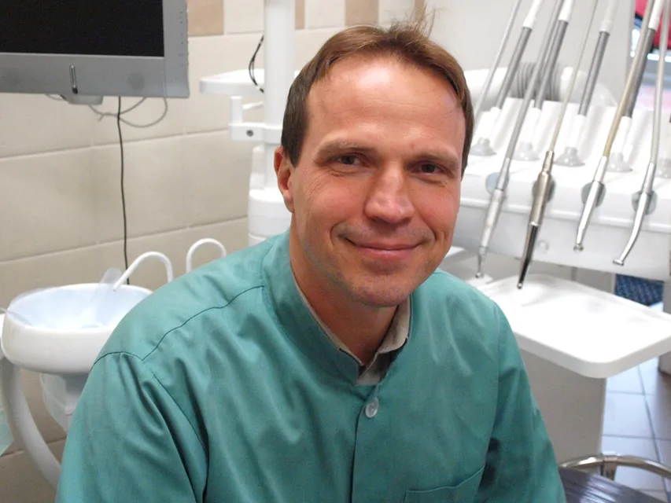
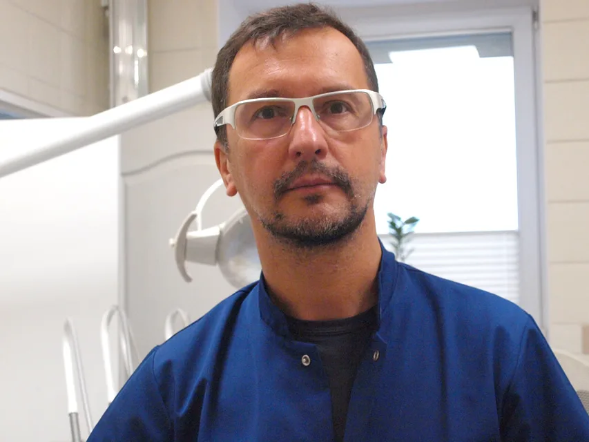
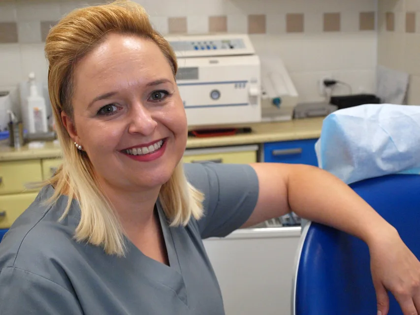
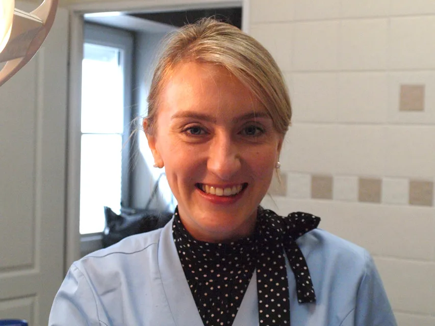
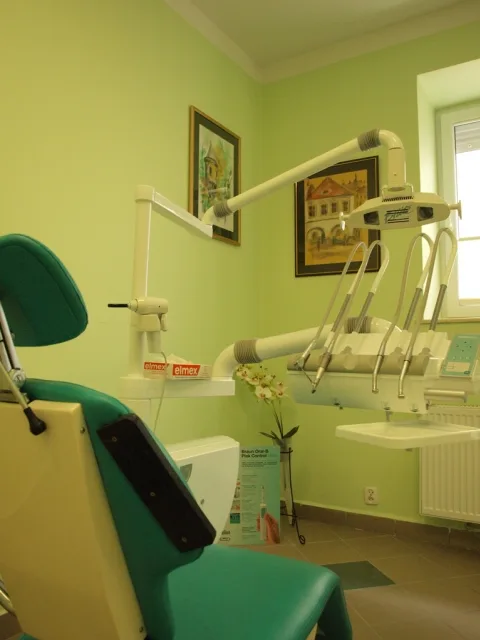

01
Stomatologia estetyczna
Obejmuje szereg zabiegów, których głównym celem jest poprawienie wyglądu pacjenta. Mają one miejsce w protetyce, ortodoncji, implantologii i stomatologii zachowawczej.
Witamy
Gabinet stomatologiczny w Kielcach od 1999 r.

O nas
DentalPark - prywatna praktyka stomatologiczna powstała w 1999 r. Założona przez lek. stom. Rafała Skrzypińskiego i lek. stom. Piotra Salwę, absolwentów Akademii Medycznej w Gdańsku.
Jesteśmy młodym, dynamicznym zespołem z dużym doświadczeniem dentystycznym i wieloletnią praktyką. Ukończone liczne kursy i szkolenia pozwalają na stosowanie współcześnie najnowocześniejszych metod leczenia. Nastawienie na jakość, estetykę i indywidualne podejście do pacjenta są cechami, które nas wyróżniają. Jesteśmy przygotowani do rozwiązywania nietypowych i niestandardowych problemów.
Oferta
Gabinet stomatologiczny Dental Park oferuje pełny zakres usług na najwyższym poziomie.
01
Obejmuje szereg zabiegów, których głównym celem jest poprawienie wyglądu pacjenta. Mają one miejsce w protetyce, ortodoncji, implantologii i stomatologii zachowawczej.
02
Najbardziej kompleksowa forma odbudowy braków zębowych, która pozwala na uzyskanie estetyki i komfortu, jaki zapewnia posiadanie własnych zębów.
03
Odbudowa brakujących zębów oraz rekonstrukcja zębów bardzo zniszczonych. Korony pełnoceramiczne, mosty, protezy stałe i ruchome.
04
Leczenie operacyjne jamy ustnej, zębów i tkanek otaczających. Jedni z nielicznych oferujemy zabiegi pod narkozą.
05
Zabiegi wykonywane precyzyjniej niż w tradycyjnej endodoncji. Mikroskop powiększa obraz ponad 40-krotnie.
06
W znieczuleniu ogólnym pacjenci nie odczuwają bólu ani towarzyszącego mu lęku. Jedno spotkanie, kilka zabiegów.
Przychodnia
Nasza Przychodnia składa się z dwóch nowocześnie wyposażonych gabinetów. Do dyspozycji posiadamy cyfrowy rentgen. Dla naszych pacjentów wydzieliliśmy bezpłatne miejsca parkingowe, a dla miłośników internetu strefę Wi-Fi







Zespół

Absolwent Akademii Medycznej w Gdańsku. Wraz z Piotrem Salwą założył Dental Park w 1999 roku. Przyjmuje w zakresie chirurgii stomatologicznej, implantologii i protetyki.

Absolwent Akademii Medycznej w Gdańsku. Współzałożyciel Dental Park. Prowadzi leczenie zachowawcze, protetyczne oraz zabiegi w znieczuleniu ogólnym.